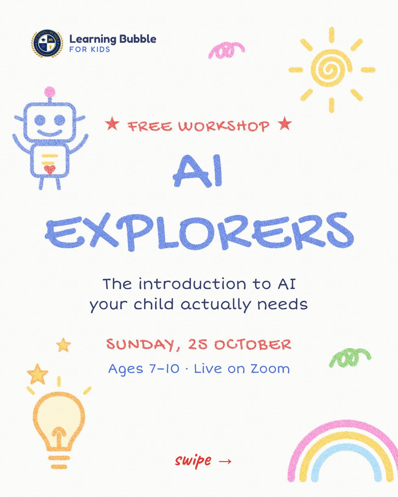

Children are already meeting AI — in voice assistants, apps and games. What most of them have not had is anyone explaining what it actually is. AI Explorers treats artificial intelligence as something to understand, not something to be impressed or frightened by.
What happens in the workshop
- Where is AI? Children spot the AI they already use at home without realising it.
- What AI is — and is not. Why it can sound confident and still be wrong.
- How a computer learns. A hands-on sorting game shows how examples become predictions — and how bad examples lead to bad answers.
- Using AI safely. Simple rules: what never to share, when to check, and why AI is not a person.
- Group challenge. A fun activity to try together, putting the ideas into practice.
What your child takes away
- A clear, age-appropriate understanding of what AI is
- The habit of questioning AI answers
- Simple safety rules for using AI tools
- A certificate of participation
Who it suits
Curious children aged 7 to 10 who ask "how does it know that?". No coding or technology experience is needed — this is AI literacy, not programming.
Want more after AI Explorers?
Older children (12–16) can take the full Artificial Intelligence for Kids course. Before the day, try our free sort it like a computer activity at home.
How to register
Fill in our short online registration form (it takes about two minutes), or send your child's name, age and the workshop on WhatsApp at +92 321 2481610. We confirm the place and send the Zoom joining details before the day. Places are kept small so every child gets attention, so it is worth registering early.
What you need on the day
- A laptop, tablet or computer with a stable internet connection
- The Zoom app installed beforehand
- A quiet spot, plus a notebook and pencil
- For younger children, a parent nearby for the first few minutes
After the workshop
Children who attend the full workshop receive a certificate of participation. If your child enjoyed it, we will tell you about the matching course and you can book a free demo class — nothing is automatic, and there is no obligation to enrol.
Read the full guide to free online workshops for kids in Pakistan, or try one of our free at-home activities beforehand.
Frequently asked questions
Does my child need to know coding?
No. AI Explorers is about understanding AI and using it safely. No coding or technology experience is needed.
Will children use AI chatbots in the workshop?
The focus is on understanding how AI works through activities and examples, with safety rules suited to the age group.
Is the workshop really free?
Yes. It is free this season; it normally costs PKR 1,500 per child. No card or payment is needed to register.
How do we register?
Fill in the online registration form linked on this page, or send your child's name, age and the workshop on WhatsApp at +92 321 2481610. We confirm the place and send the Zoom details.
Can my child join more than one workshop?
Each child can take part in one workshop this season. Pick the one your child is most excited about.